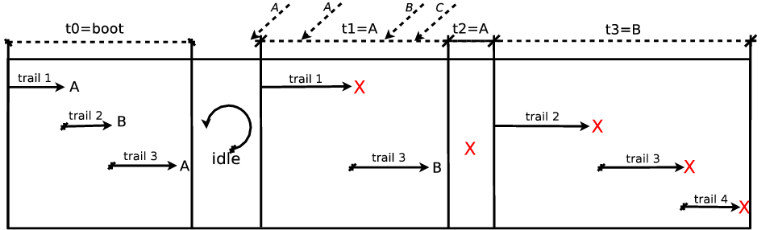

Synchronous Execution Model
Céu is grounded on a precise definition of logical time (as opposed to physical) as a discrete sequence of input events: a sequence because only a single input event is handled at a logical time; discrete because reactions to events are guaranteed to execute in bounded physical time (see Bounded Execution).
The execution model for Céu programs is as follows:
- The program initiates the boot reaction from the first line of code in a single trail.
- Active trails, one after another, execute until they await or terminate. This step is named a reaction chain, and always runs in bounded time. New trails can be created with parallel compositions.
- The program goes idle.
- On the occurrence of a new input event, all trails awaiting that event awake. It then goes to step 2.
The synchronous execution model of Céu is based on the hypothesis that reaction chains run infinitely faster in comparison to the rate of input events. A reaction chain, aka external reaction, is the set of computations that execute when an input event occurs. Conceptually, a program takes no time on step 2 and is always idle on step 3. In practice, if a new input event occurs while a reaction chain is running (step 2), it is enqueued to run in the next reaction. When multiple trails are active at a logical time (i.e. awaking from the same event), Céu schedules them in the order they appear in the program text. This policy is arbitrary, but provides a priority scheme for trails, and also ensures deterministic and reproducible execution for programs. At any time, at most one trail is executing.
The program and diagram below illustrate the behavior of the scheduler of Céu:
1: input void A, B, C; // A, B, and C are input events
2: par/and do
3: // trail 1
4: <...> // <...> represents non-awaiting statements
5: await A;
6: <...>
7: with
8: // trail 2
9: <...>
10: await B;
11: <...>
12: with
13: // trail 3
14: <...>
15: await A;
16: <...>
17: await B;
18: par/and do
19: // trail 3
20: <...>
21: with
22: // trail 4
23: <...>
24: end
25: end

The program starts in the boot reaction and forks into three trails. Respecting the lexical order of declaration for the trails, they are scheduled as follows (t0 in the diagram):
- trail-1 executes up to the
await A(line 5); - trail-2 executes up to the
await B(line 10); - trail-3 executes up to the
await A(line 15).
As no other trails are pending, the reaction chain terminates and the scheduler
remains idle until the event A occurs (t1 in the diagram):
- trail-1 awakes, executes and terminates (line 6);
- trail-2 remains suspended, as it is not awaiting
A. - trail-3 executes up to
await B(line 17).
During the reaction t1, new instances of events A, B, and C occur and
are enqueued to be handled in the reactions in sequence.
As A happened first, it is used in the next reaction.
However, no trails are awaiting it, so an empty reaction chain takes place
(t2 in the diagram).
The next reaction dequeues the event B (t3 in the diagram):
- trail-2 awakes, executes and terminates;
- trail-3 splits in two and they both terminate immediately.
Since a par/and rejoins after all trails terminate, the program also
terminates and does not react to the pending event C.
Note that each step in the logical time line (t0, t1, etc.) is identified by the unique occurring event. Inside a reaction, trails only react to the same shared global event (or remain suspended).